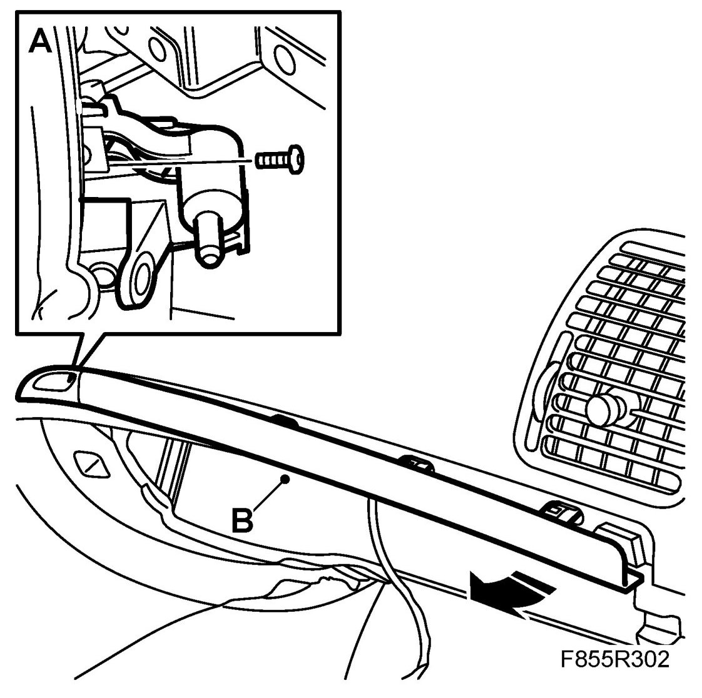
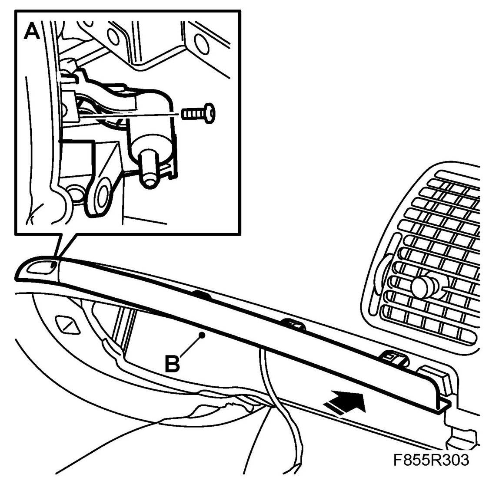

Moulding, Dashboard
Moulding, Dashboard
NOTE: If the glove box cannot be opened, the lock can be accessed by removing the centre panel vent and the radio panel.
To remove
1. Remove the glove box.
2. Remove the bolts (A) from the glove box lock.

3. Remove the dashboard trim moulding (B) by pushing out the trim clips from the inside of the dashboard.
To fit
1. Fit the dashboard trim moulding (B).

2. Fit the glove box lock bolts (A). Begin with the bolt in the centre of the lock.
3. Refit the glove box.